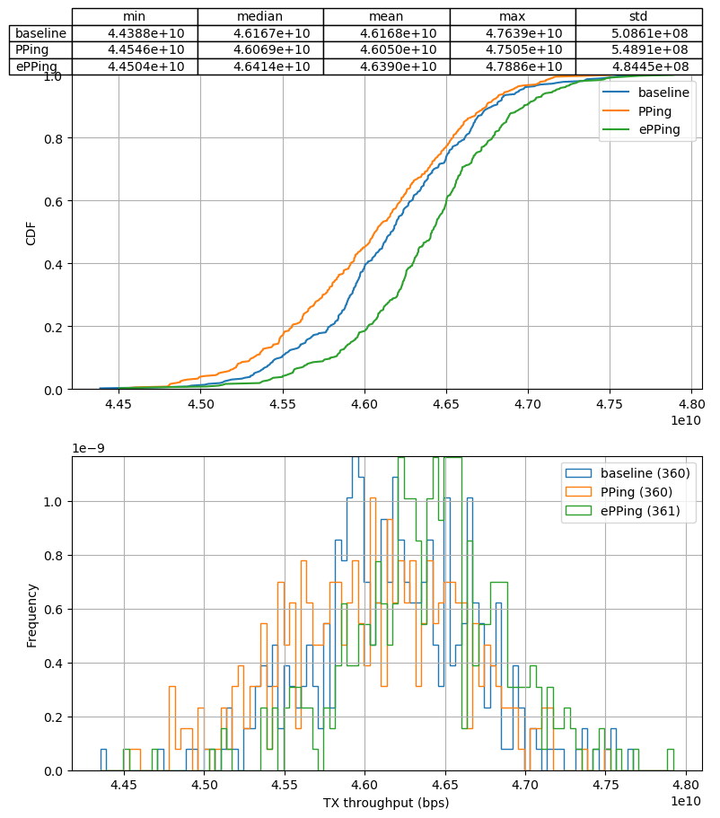
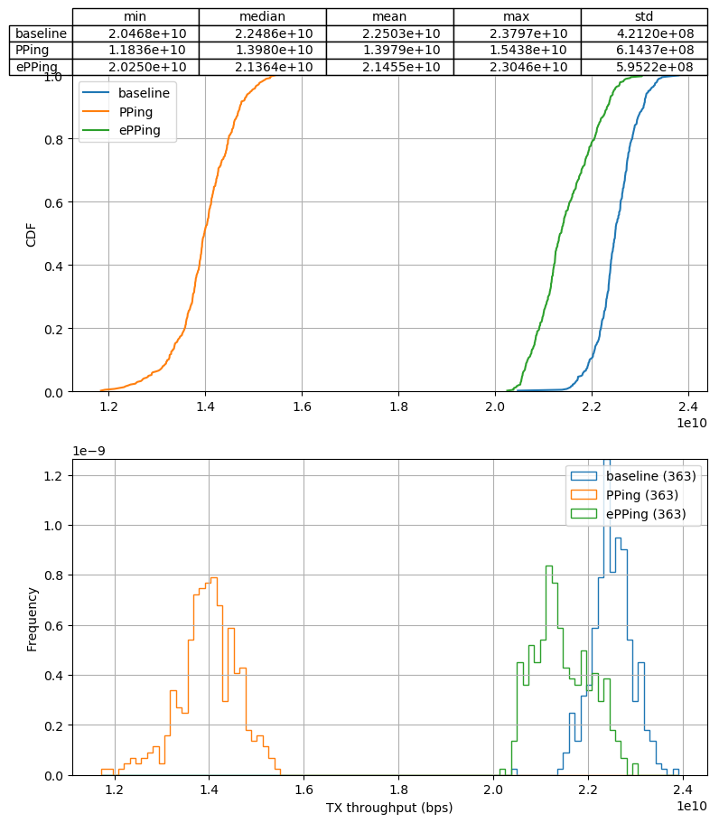
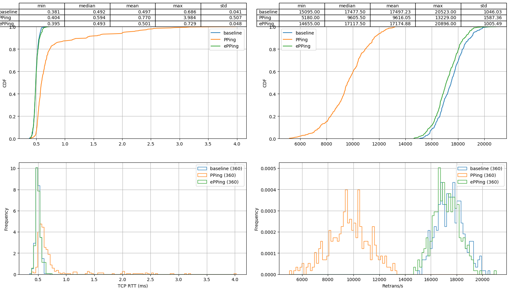

Progress update 2022-03-01
Simon Sundberg
Created: 2022-03-01 tis 09:24
1 PPing progress
- Prepared final PR (…with code changes)
- Toke may still request changes
- Test with rate sampling
- Toke has fixed with conntrack
- Have done a quick test with it
2 Performance impact of rate sampling
- Original tests have been with no sampling to test raw performance and get "fair" comparison with PPing
- Not a realistic setup, produces massive amount of output
- Have done a quick test to see performance with the rate limit sampling
- Rate limit set to 1 RTT every 100ms (10 Hz) per flow
- Packets + (e)PPing pinned to single core
- At 1k flows, only get ~4500 events/s
- Much lower than theoretical 10 * 1000 = 10000
- Likely a combination of burstiness of transmission and missing replies
2.1 No pinning (multicore) - 10 + 1000 flows

2.2 Pin single core - 10 + 1000 flows

2.3 No RTT events - 10 + 1000 flows

2.4 Rate sampling 100ms - 10 + 1000 flows
2.5 Empty BPF programs (xdp), 10 + 1000 flows

2.6 Empty BPF programs (tc), no conntrack - 10 + 1000 flows

3 Other noteworthy effects
- Both PPing and ePPing has a noticible effect on RTT
- Adds upwards of 0.5 ms
- Why? The processing overhead per packet much smaller
- Large amount of retransmissions at 1000 flows
- About ~90k/s at 1000 flows (packet rate ~1.5 million pps)
- Corresponds to ~6% of the packets
- Kathie's PPing seems to capture < 10% of packets in tests
- Based on quick glance at couple of examples
3.1 No rate sampling - 10 flows
3.2 No rate sampling - 1000 flows
3.3 Empty BPF programs - 10 flows

3.4 Empty BPF programs - 1000 flows